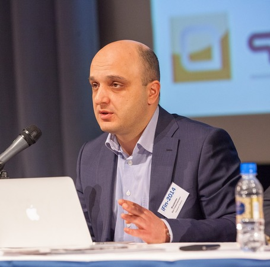
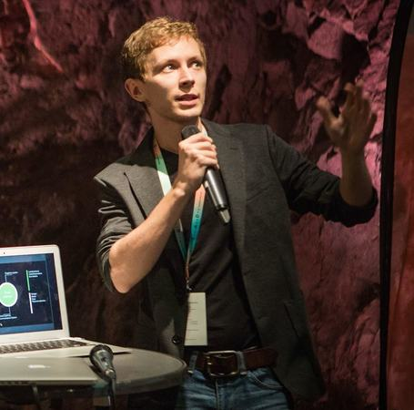
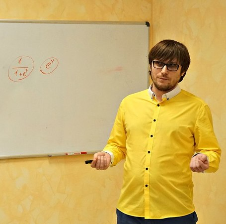
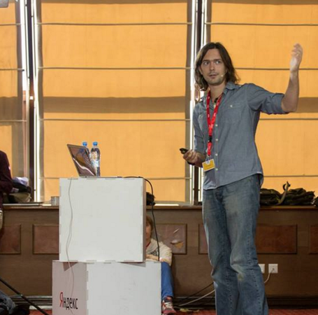
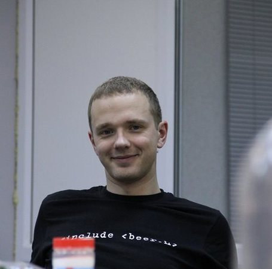

Доклады
-
Исраелян Ара PROF-IT VENTURES , Руководитель направления разработки ПО
Backend As A Service (BaaS). Взгляд изнутри.
1. Анализируй это
Мировой и российский рынки облачных решений PaaS и BaaS. Результаты проведенных исследований, финансовые показатели, конкуренция, тренды рынка облачных платформ для разработчиков.2. Проблема выбора
Облако или собственная разработка? Разработка backend – сдерживающий фактор роста стартапов. Преимущества облачного решения и возможные проблемы, которых боятся компании.3. Чего изволите?
Функциональные потребности пользователей. Минимально необходимый функционал BaaS. Фишки существующих сервисов. Идеальный BaaS – какой он?4. Техника вопроса
Погружение в технические проблемы, возникающие на пути к созданию BaaS ""с нуля"". Архитектура – варианты решений. Языки, СУБД, платформы – на чем делать сервис?5. Свято место пусто не бывает. Куда мигрировать с Parse без усилий?
Анонс облачной платформы для разработки backend для веб, десктоп и мобильных приложений SCOROCODE. -
 Бартунов Олег Postgres Professional , генеральный директор
Бартунов Олег Postgres Professional , генеральный директорPostgreSQL - сегодня и завтра
Мир данных непрерывно меняется — они становятся разнообразнее, все чаще встречается требования онлайн-работы с терабайтами данных и одновременной работы большого числа сервисов. Уже сейчас основными потребителями и производителями данных являются машины, а не человек. Мы спокойно говорим про BigData, многоядерные машины с терабайтами памяти, объединенные в кластеры и петабайтные хранилища. Мир баз данных тоже меняется, появились сотни новых баз данных и это говорит о том, что традиционные СУБД не успевают за новыми требованиями. В тоже время, традиционные универсальные СУБД являются проверенным и надежным инструментом для работы с данными, поэтому они также вступили в гонку за потребителя.
Я расскажу о том, как разработчики PostgreSQL видят его будущее и что уже сейчас он может предложить архитекторам новых приложений. -
Идрисов Ренат MachineZone , Team Leader
Как измерить latency
Казалось бы, ничего сложного: берём время после, вычитаем время до и получаем заветное время реакции системы, но это работает только для одиночных измерений. Проблемы начинаются когда таких чисел становится много. В докладе я расскажу про наш опыт, который мы получили в процессе измерения latency событий, приходящих со скоростью 100 миллионов в секунду. Будут рассмотрены алгоритмы сэмплирования и их проблемы, ложь персентилей и влияние измерений на систему. Кроме того, речь пойдёт и о правильных способах, при помощи которых можно перестать обманывать себя и окружающих относительно скорости реакции системы.
-
Alvaro Videla RabbitMQ , Core Developer
What We Talk About When We Talk About Distributed Systems
Distributed Systems are a complex topic. There's abundant research about it but sometimes it is hard for a beginner to know where to start. I would like to outline the main concepts of distributed systems, so the interested person can have a clear path on how to start their own research as well.
In this talk I will review the different models: asynchronous vs. synchronous distributed systems; message passing vs shared memory communication; failure detectors and leader election problems; consensus and different kinds of replication.
I will also review a series of books on distributed systems in order to recommend the best one according to the topics we would like to learn about, or the problems we would like to solve.
The goal of the talk is to set a good foundation for people interested in learning more about distributed systems.
-
Бунин Олег Онтико , Генеральный директор
HighLoad в реальных условиях
Реальные условия отличаются от идеальных. Очень мало проектов в мире, которые могут позволить себе писать модули к nginx'у или ставить комет-серверы на erlang'е.
Но нагрузки это не только миллионы пользователей, сотни тысяч запросов в сутки - это вполне реально для многих проектов.
Мы обсудим с вами простые шаги, которые позволят вам выдерживать высокие нагрузки. Десять первых пунктов, которые вы должны проверить перед тем, как двигаться дальше. Десять пунктов, которые могут помешать вам выдерживать нагрузку, когда это понадобится. Шагов, для которых не нужно rocket science, которые может сделать каждый... (ну почти каждый :)
-
Бартенев Валентин NGINX, Inc. , Core Developer
HTTP/2: мифы и факты
HTTP является одним из основных протоколов интернета, без которого немыслим современный веб. Наиболее широко используемая на текущий момент версия протокола HTTP/1.1 получила свое распространение ещё в 1996 году. С тех пор протокол практически не менялся, пока в 2012 не началась разработка спецификации HTTP/2 на основе экспериментального протокола SPDY. Вскоре, уже в 2015 году, официальная спецификация нового протокола была утверждена рабочей группой IESG. На данный момент протокол поддерживается наиболее популярными браузерами. А ещё в начале сентября 2015 поддержка HTTP/2 была добавлена в nginx.
Протокол HTTP/2 обещает ускорение загрузки страниц и очень активно продвигается компанией Google. На волне агрессивного маркетинга вокруг него уже сложился ряд мифов. Но так ли хорош новый протокол на самом деле? Какие у него преимущества и недостатки по сравнению со старым добрым и проверенным временем HTTP/1.1? Стоит ли переходить на новый протокол, и какие могут подстерегать подводные камни?
Эти и другие вопросы будут освещены в докладе с точки зрения разработчика модулей SPDY и HTTP/2 в nginx.
-
Макеев Вадим Opera , веб-евангелист
Можно вообще всё. Раскладка по гриду
Верстаете как юный бог на флексах или пасёте флоуты по углам — неважно. Когда-нибудь вам придётся перейти на грид-раскладки. Не просто инлайн-блоки на стероидах, как флексы, а принципиально новую систему, созданную специально для сложных раскладок. Понятное введение и примеры использования для реальных задач.
-
Викторов Денис GeNext , Старший научный сотрудник
Генетика – ключевой компонент инноваций
- О нашей компании GeNext
- Что такое генетика и молекулярная генетика
- Срез истории развития генетики
- Секвенирование нового поколения
- Тесты доступные уже сейчас
- Биоинформатика и крупные проекты в биоинформатике
- Биоинформа́тика в России -
Журавский Василий RuGadget , tech-lead
Как носимая электроника изменит нас
Для чего мы носим вещи?
Почему одни устройства популярны, а другие - нет?
Как создаются носимые устройства?
От чего зависит, что мы будем носить с собой через N-лет?
Как носимые устройства изменят нас? -
Рожнов Александр restream.pro , Software engineer
Модные технологии на службе добра. Про Kubernetes.
Docker, Kubernetes, контейнеры. Это все очень модно и молодежно. Один вопрос. Как это поможет нам выжить? Переходим от теории к практике применения модных технологий. Как они могут вам пригодиться на деле, с чего стоит начать, опыт хождения по граблям.
-
Чикин Сергей Altren , Генеральный директор
Умная энергетика
Основной вектор развития энергетики - наполнение ее "знаниями" и высокими технологиями - переход к интеллектуальным сетям и пользовательским сервисам. На смену дома-потребителям энергии приходят дома-генераторы, приносящие доход своим хозяевам. Энергетика будущего - это не громадные чадящие угольные станции, а изящные экологичные конструкции, встраиваемые непосредственно в здания, это получение энергии из ветра, солнца, волн, отходов... Количество используемых девайсов и гаджетов заставляет человека самому превращаться в маленькую электростанцию... Будущее? Нет, уже реальность! В Ульяновске строят первый в России промышленный ветропарк.
-
 Уханова Ольга Stroylab , Менеджер проектов
Уханова Ольга Stroylab , Менеджер проектовМатериалы будущего или как я перестала бояться и полюбила нанотехнологии
Технологические стартапы в мире disruptive economy. Как строить бизнес в экономике знаний. Обзор наиболее интересных тенденций и событий в мире advanced materials - инновационные материалы позволяют реализовать сложные решения и проекты, воплотить смелые замыслы разработчиков. Иллюстрация: инновационные материалы здесь и сейчас - что мы делаем в наноцентре и как это изменит привычные вещи, которые нас окружают.
-
Боронин Валерий Positive Technologies ,
Построение процесса безопасной разработки - что это означает на практике для разработчиков и их руководителей?
Безопасность - критически важный элемент любого программного решения. Элемент, который, рано или поздно, но заставит вспомнить о себе. Скупой платит дважды, а в данном случае – минимум четырежды. Безопасность и качество кода – связаны напрямую. Поэтому положение дел и с тем и с другим редко находят достаточно хорошим даже в самых успешных проектах – всегда хочется бОльшего. А где-то бывает просто необходим качественный переход и точечными мерами кардинально ситуацию уже не исправить, нужен системный подход.
Вот почему наладить процесс обеспечения и повысить уровень зрелости безопасности разработки, повысить качество кода – хотят многие руководители и разработчики. Как это сделать системно и в согласии? Какие риски для одних, какие трудозатраты для других? И стоит ли овчинка выделки? Об этом и поговорим.
-
 Киселёв Алексей Kaspersky Lab Russia ,
Киселёв Алексей Kaspersky Lab Russia ,Сколько стоит получить DDoS-атаку и как избежать этого «удовольствия»
.
-
Белоенко Максим Qrator Labs ,
DDoS: что делать, когда вас "валят"
Как известно, DDoS-атаки на сегодня выступают одним из методов конкурентной борьбы. Вопросы устойчивости и защищённости являются одним из основных вызовов, стоящих перед разработчиками и системными администраторами интернет-магазинов. Чтобы адекватно ответить на эти вызовы, необходимо правильно оценивать риски. Но как это делать, если, из СМИ мы узнаём что атаки сейчас достигли заоблачных мощностей в 500 Гбит/с, а в качестве средства защиты предлагается сетевое «железо» стоимостью несколько миллионов рублей?В докладе я расскажу как сделать так, чтобы DDoS атака не застала врасплох.
-
Макаров Илья Simtech , CTO
Опыт внедрения Scrum в продуктовой команде. Ошибки, эксперименты, результаты.
- Суть Scrum вкратце, и какой от него профит
- Какие ошибки я допустил в процессе внедрения и во что они вылились.
- Как сейчас Scrum работает в нашей компании.
- Как баги вписываются в парадигму Scrum, и как правильно организовать работу с ними. -
Мациевский Николай Айри.рф , Технический директор
Как сделать сайт, который не падает
* Основные технические проблемы отказа веб-проекта
* Подходы "на коленке" или "все по-взрослому". В чем разница?
* Как последовательно повысить отказоустойчивость сайта с 99% до 99,999%: прикладные решения, организационные методы, стоимость инфраструктуры -
Дунаев Михаил Rambler&Co , frontend developer
Визуализация данных в браузере с помощью D3.js
Практический опыт использования библиотеки d3.js для создания инфографики. Загрузка, обработка, связывание и визуализация данных.
-
Каляев Антон FunBox , Software Engineer (Erlang)
Опыт использования Erlang в компании Fun-Box
Расскажу про собственный опыт (полтора года) и опыт компании. Поговорим о:
- проблемах, с которыми столкнулись при написании приложений, и как мы их решили
- какие инструменты используем
- как деплоим
- как дебажим
- личные впечатления от языкаТакже поделюсь впечатлениями от Elixir.
-
Кельвич Станислав Postgres Professional , Разработчик
Квартирник: Как сделать распределенные транзакции в кластере баз данных и почему это важно
Расскажу какие бывают виды изоляции транзакций и транзакционных аномалий; почему неправильный выбор уровня изоляции может угрожать безопасности системы; и как можно сделать распределенные транзакции в кластере баз данных.
-
Герман Станислав Rambler&Co , Руководитель группы , Отдел разработки Ruby
jRuby как инструмент быстрой разработки
- для каких задач подходит jRuby
- как работать с java библиотеками из jRuby
- какие инструменты мы использовали для управления гетерогенными зависимостями
- как тестировать код у которого есть как ruby так и java зависимости -
Петлинский Павел Рамблер , Ведущий инженер-разработчик
Python 3.5 и asyncio на продакшн
В python 3.4 появился asyncio. До сих пор многие разработчики не знают, что это такое, как реализуется асинхронность в Python и в чем её сильные и слабые места.Повторим пройденное и заглянем под капот. Посмотрим, какие проблемы есть на данный момент в продакшн со стеком Python 3.5/asyncio.
-
Чернобров Михаил Rambler & Co , Ведущий инженер-разработчик клиентских приложений
Тестирование фронтенда: миф или реальность?
Перешли на webpack и теперь собираетесь внедрять TDD? Самое время задуматься о том, как это сделать.
В моем докладе я расскажу об этапах конфигурирования webpack в поле видимости unit тестов.
Так же рассмотрим нестандартные случаи, и способы их решения.
С головой окунемся в мир интеграционных тестов. -
Росс Георгий Авто.ру , Руководитель группы администрирования Авто.ру
Сложности переноса проекта из 1 датацентра в распределенную сеть датацентров.
1. Планирование серверного парка
2. Составление схем работы по всему технологическому стеку
3. План миграции
4. Основные проблемы
- Синхронизация кешей
- Распределенный mysql
- Внутреннее балансирование
- Мониторинг (zabbix)
- Оркестрация
5. Нагрузочное тестирование
6. Миграция
7. Отключение старого дц
8. Вопросы -
 Кулагин Михаил Postgres Professional , DBA
Кулагин Михаил Postgres Professional , DBAКвартирник: Отказоустойчивый кластер своими руками
1. обзор штатных возможностей отказоустойчивости postgresql
2. возможности pacemaker/corosync
3. сборка вместе и запуск на raspberry pi
4. демонстрация -
Михальский Станислав Mail.Ru Group , Технический директор
Медиапроекты Mail.Ru Group: трудовые будни директора луна-парка или как управиться с десятком "примерно похожих" проектов
Среднесуточная аудитория медиапроектов Mail.Ru Group – это примерно десять миллионов посетителей, генерящих примерно шестьдесят миллионов просмотров. В моем выступлении я расскажу:
· о том, как мы обеспечиваем бесперебойную работу в условиях такой высокой нагрузки.
· об общих для всех этих проектов “узких местах”, а также об индивидуальных продуктовых и технологических нюансах
· о мониторинге, DevOps и эффекте домино при использовании внешних сервисов
· о том, есть ли разница между одним и десятью проектами с точки зрения обеспечения отказоустойчивости, восстановления работоспособности и профилактики ,
· о преимуществах и недостатках масштабирования и кэширования
. о балансе между стратегией и тактикой и о системном подходе к разработке в наших проектах -
Васильев Дмитрий Postgres Professional , инженер-консультант
Квартирник: Беспроблемная эксплуатация PostgreSQL
Администрирование: типичные ошибки при работе с PostgreSQL.
Зачем нужен vacuum?
Bloat.
Wraparound.
Управление памятью.
Балансировка клиентов.
Windows. -
Бабич Татьяна Simbirsoft , Руководитель Frontend-отдела
В поисках идеальной аХРитектуры ui-проекта
Мы знаем что такое "архитектура" - за последний год мы реализовали более 20 ui-проектов различного масштаба - от 200 до 10000 человеко-часов.
Часть проектов сделали "с нуля", часть - "благословенный" legacy код.Чтобы сделать "правильно" мы использовали различные best practice, мы много что перепробовали.
В итоге сейчас мы знаем, как сразу заложить в проект верную архитектуру, чтобы потом не было мучительно больно. Какие фишки фреймворка рационально использовать и когда. Как правильно организовать файлы на активно развивающемся проекте. И многое другое, что теперь облегчает жизнь нашим ui-разработчикам.На докладе мы рассмотрим вопросы проектирования ui-приложения, его архитектуры. Поговорим о сборках и полезных библиотеках. Естественно, расскажем, с какими проблемами мы сталкивались и как их решили.
-
Гайнуллин Артур Cryptogramm , Руководитель проекта
Пожалуйста, введите ваш пароль. Дважды!
Знали ли вы, что термин «Двухфакторная аутентификация» был впервые зарегистрирован в 1984 году?
Известно ли вам, что среднестатистическому хакеру потребуется от 1 до 10 секунд на «угадывание» вашего пароля?
А то, что один из самых популярных паролей в 2016 году - пароль «starwars»?
Еще больше фактов, а также практических примеров в докладе "Пожалуйста, введите ваш пароль. Дважды!" . -
Ваказов Рамис SimbirSoft , QA Lead
UX и UI - почему важно внедрять тестирование на начальных этапах
Когда мы слышим такие фразы, как: "Этим невозможно пользоваться" и "Совершенно неюзабельно", начинаем разбирать каждый из компонентов в отдельности, находим, что все они соответствуют стандартам юзабилити и ожиданиям пользователя, так почему же "этим невозможно пользоваться"?
В докладе речь пойдет о:
- общем представлении юзабилити;
- разделении представления о пользовательском интерфейсе и опыте взаимодействия;
- выгодах раннего внедрения тестирования. -
Saks Sven Private Entrepreneur , QA Guru
Управление производительностью и нагрузочное тестирование
У внедрении новых техник и методов QA (да и всей разработки) есть общая проблема люди внедряют новые техники скорее по тому что это модно чем по тому что понимают зачем им это. Данный доклад имеет цель раскрыть вопрос "Зачем?" и только совсем немного вопрос "Как?" в отношении нагрузочного тестирования. И поняв зачем вам нагрузочное тестирование вы сможете с большей эффективность внедрить у себя методики нагрузочного тестирования.
-
Елеськин Григорий SeeSaw Labs , Go developer
Pony - убийца...?
- У вас на чердаке лежат сервера с 64-и ядрами и более?
- Вы уже устали от того, что у вас простаивают миллионы гигагерц?
- Или в конце концов, вы хотите очень быстрый Эрланг?Тогда вам, как и мне, не терпится увидеть данный язык среди различных (Go, Scala, Erlang, Elixir, Rust, etc...) и начать писать на нем крутые штуки в продакшен.
-
Ключников Алексей XiMAD , Разработчик
Серверная сторона мобильных приложений. Erlang style: принципы создания интерактивного масштабируемого сервиса.
Програмирование
Server Side
Hi-load
Erlang
Решардинг без остановки
Мобильные приложения -
Рязанский Сергей Роскосмос , космонавт-испытатель
Взгляд из космоса.
Что надо знать чтобы полететь в космос. Кого берут в космонавты. Все цели достижимы, главное знать куда копать :)
-
Иноземцев Александр Headhunter , Ведущий разработчик
Cбор отчетов об ошибках и мониторинг производительности клиентского Javascript
На примере hh.ru обсудим:
- зачем собирать информацию с клиентских браузеров и как правильно это делать;
- Real user monitoring (RUM), что можно покрыть мониторингом в браузере, что делать с этой информацией;
- обзор текущих решений для сбора отчетов об ошибках;
- наша инфраструктура сбора ошибок;
- идентификация запроса и воспроизведение ошибки;
- подводные камни: соотношение сигнал/шум, различные браузеры, sourcemaps, rate limiting;
- workflow обнаружения и решения javascript ошибок; -
Немытченко Иван GitLab , Developer Advocate
GitLab. Хостим вашу разработку, а не только репозитории
Покажу как выглядит процесс разработки софта с GitLab и расскажу про то:
- какие преимущества дает встроенный CI (Continuous Integration)
- как свалить всю рутинную работу по генерации статических сайтов на GitLab Pages
- насколько просто устанавливать и обновлять GitLab с помощью omnibus
- кто платит за бесплатность GitLab CE и GitLab.com
-
Бурлаков Михаил Oyster , тех. специалист
User Defined Functions: зоопарк в зоопарке
В презентации обсуждаются вопросы, связанные с применением UDF в SQL и NoSQL базах данных. Описываются основные достоинства и недостатки применения как в общем случае в рамках информационной системы, так и в более частном - на конкретных базах данных. Даются общие описания реализаций того, как это устроено на различных платформах БД и какие были придуманы костыли для решения наиболее актуальных задач с применением механизма UDF. Поднимается проблематика отсутствия единого подхода в построение UDF механизмов.
-
Блохин Леонид Provectus , Big Data Engineer
Дружим языки Scala и Python
Scala (Martin Odersky) & Python (Guido van Rossum)
Подружим эти два замечательных языка, настало время разрушить границы!
Что мы разберем в процессе моего выступления:
- Как питонить в скале! Прямо в JVM не отвлекаясь на такие мелочи, как интерпретатор Python!
- Как скалить из питона! Или как взывать к JVM!
- Как питонить, и не только, из скалы! Сразу на несколько разных интерпретаторов!
- Четыре очень полезных инструмента, если Вы немного сумашедший, и собрались это делать!
В выступлении гарантирую примеры кода! -
Савунов Василий Scrumtrek , Коуч
Scrum-мастер, управленческий минимум
Всем хочется, чтобы их команда разработки была самой эффективной, дружной, и в идеале - самоорганизованной.
Но для того,чтобы этого достичь, нужно понимать что происходит с группой с течением времени, нужно быть в курсе групповой динамики.
В докладе мы разберем, как группа влияет на своих членов, что происходит в процессе развития группы, разберем как группа принимает решения, и как ей помочь выработать жизнеспособное соглашение. -
Ивлиев Роман ИА "Банки.ру" , Директор по информационным технологиям
Как мы делаем Банки.ру
Я расскажу реальную историю эволюционирования процесса разработки и эксплуатации наших порталов, поведаю с каким сложностями мы сталкивались и продолжаем сталкиваться, а также какие решения помогают нам делать портал лучше, а его работу стабильнее и быстрее.
Мы не претендуем на высокие места в рейтинге самых технологичных и самых высоконагруженных. Вряд ли вы найдёте в докладе глубокие технические детали а-ля ""так классы уже никто не пишет"" или ""а давайте всё перепишем на go"", а вот про грабли, по которым мы прыгаем на костылях, про то, чем мы пользуемся, а чем не пользуемся совсем, я обязательно расскажу. Я постараюсь, чтобы было много реальных примеров из жизни относительно небольшого подразделения (нас 35, включая админов, архитектора, саппорт и менеджера в лице меня), а не известных парнокопытных в вакууме. -
Юнев Владимир Microsoft , старший эксперт по стратегическим технологиям
.NET теперь открытая платформа, запуск приложений на OSX и Linux
В рамках этого доклада мы рассмотрим как платформа .NET становится полностью открытой платформой с открытым исходным кодом и процессом разработки. Как можно начать работать на платформе на ОС Linux и OSX, что для этого сделать. Как разрабытвать и хостить веб-приложения на базе ASP.NET в Linux и Windows, а так же любом облачном хостинге. Мы научимся писать код на .NET с помощью Visual Studio Code на любой операционной системе.
-
Юнев Владимир Microsoft , старший эксперт по стратегическим технологиям
Опенсорс в облаке Azure – как эффективно запускать и выдерживать высокие нагрузки в облаке в стеках LAMP и MEAN
В рамках этого доклада мы рассмотрим текущее состояние облачных технологий Microsoft и платформы Azure для запуска решений на базе открытого кода,таких как MEAN (MongoDB + Node.js) или LAMP (PHP + MySQL), а так же любых других. Мы рассмотрим как облачная платформа помогает сократить расходы и увеличить скорость выпуска продуктов, отказавшись от капитальных затрат на собственную инфраструктуру, в то числе для задач разработки и тестирования.
-
Юнев Владимир Microsoft , старший эксперт по стратегическим технологиям
Микросервисы + контейнеры, тренды, технологии, примеры
В этом докладе мы рассмотрим технологии микросервисов и смежные с ними контейнерные технологии на примере Docker. Мы посмотрим какие новые технологии предлагает компания Microsoft для эффективной разработки кроссплатформенных микросервисов, работающих как в облаке так и в локальной инфраструктуре.
-
Шмыров Всеволод Яндекс , Разработчик интерфейсов API Яндекс.Карт
Использование File API в Конструкторе Яндекс.Карт
Совсем недавно в Конструкторе Яндекс.Карт произошло большое обновление. Была добавлена возможность получать изображение карты в высоком качестве для полиграфической фпечати. Интересно это обновление тем, что это все происходит в прямо в браузере при помощи web спецификации File API. В докладе пойдет речь про практическое использование File API в конструкторе и про другие полезные кейсы использования спецификаций.
-
Ермаков Алексей PostgreSQL-Consulting , PostgreSQL DBA
Рецепты оптимизации производительности PostgreSQL
Оптимизировать работу высоконагруженной системы не всегда простая задача, и зачастую именно база данных является узким и трудномасштабируемым местом.
В докладе будут рассмотрены типичные причины недостаточной производительности PostgreSQL: начиная с уровня приложения и его архитектурных проблем, настроек базы, оптимизации запросов и заканчивая уровнем операционной системы и железа.
Также будет показано, каким образом находить проблемные места и как их можно устранять. -
 Гиниятуллин Искандер БИБОСС , Руководитель отдела разработки
Гиниятуллин Искандер БИБОСС , Руководитель отдела разработкиОрганизация системы прав доступа.
DAC, MAC, RBAC, ABAC - что это значит, и с чем это едят?
Обзор каждой из применяемых в данный момент систем разграничения прав доступа, плюсы и минусы.
Комбинированные системы авторизации.
Практический кейс: как мы реализовывали систему ограничения прав доступа на YII 2 с внешним центром авторизации -
Гиниятуллин Искандер БИБОСС , Руководитель отдела разработки
Асинхронный PHP
Где это может использоваться, какие проблемы решает
Какие варианты реализации предлагает PHP в данный момент
Практический кейс реализации асинхронной системы событий внутри группы из 6 сайтов, каждый из которых отвечает за свою часть функциональности (один - отправка писем, другой - авторизация пользователей и т.д.) на YII 2 -
Ихалайнен Николай Percona , Старший специалист технической поддержки
Методы и инструменты повышения производительности в MySQL 5.6 и 5.7
- методы оценки производительности базы данных
- влияние настроек операционной системы на время ответа SQL-запроса, pt-stalk как способ снять слепок производительности системы в целом
- performance schema и sys schema: как готовиться к проблемам
- pt-query-digest - знай своего разработчика приложений в лицо, делим время ответа запроса на части и пытаемся найти ответственного за исправление SQL-кода.
- готовим сервер летом: sysbench, mysqlslap и другие способы нагрузить сервер. Интерпретация результатов бенчмарка. -
Аксенов Андрей Sphinx , CEO
Низкоуровневый серверсайд вручную: о чем молчат в школе
Как строить программные сервера. Стандартные техники, общие проблемы, недобитый C++. Сетевые протоколы: текст, бинарь, protobuf, http/xml/json, креатив. Обработка запросов: форкаться удобно, зато треды быстро, а иногда (иногда) даже можно чуток совместить. Вечные идиотские проблемы: аллокаторы и внезапный контеншн, косоглазые бэктрейсы, тупо рейсы, родные дедлоки, реэнтерабельность это вам не тредобезопасность, рассинхрон часов, медитация TCP стека, говнодиски и прочие приветы от виртуализации. Какой язык выбрать и как: Python, Java или, упаси Кришна, C++.
-
Сошников Василий MailRU Group , Разработчик на проекте Рейтинги@Mail.ru
Обзор Tarantool DB.
- Покажу несколько архитектурных(production) решений.
- Текущие возможности.
- Что ждать от версии 1.7. -
Малейков Алексей HTML Academy , Ведущий разработчик
Радости и гадости регрессионного тестирования вёрстки
В процессе создания массовой системы тестирования вёрстки возникало множество проблем, начиная от рендеринга шрифтов и заканчивая кривыми архивами. Сложности проверки соответствия макету и анализа HTML и CSS-кода. В общем, куча гадостей и много радости.
-
Корзунов Антон Яндекс , Разработчик интерфейсов
Ренессанс клиентской графики
Что такое WebGL.
Для каких целей его стоит использовать.
Особенности работы с WebGL.
Почему "нельзя просто так взять", особенно если ты гуманитарий.
Хаки, трюки, и математические фокусы.
Подводные грабли WebGL -
Плешивцев Антон Virool , Senior Developer
Легкий способ ускорить приложение в 1000 раз
- Игровой сервер, который мы разрабатываем
- Первая реализация на python и проблемы
- Как мы пытались ускорить python-реализацию
- Как мы переходили на Go и какие остались впечатления
- Почему начинает тормозить Go
- Как ускорить программу в 1000 раз -
Иванов Алексей Злые марсиане , Фронтенд-разработчик
CSS-в-JS, HTML-в-JS, ВСЁ-в-JS. Когда всё вокруг JavaScript жить становится гораздо проще
– Как перестать волноваться не забыл ли ты добавить в сборку нужные CSS- и JavaScript-файлы?
– Как удалить из сборки неиспользуемые селекторы в CSS и неиспользуемые функции в JavaScript?
– Как минифицировать имена CSS-классов, а потом поменять их в HTML и JavaScript ничего не сломав и не забыв?
– Как сделать сборку, в которой будет только тот CSS и JavaScript, который нужен для текущей страницы?
– Как исключить конфликты в именах CSS-классов без BEM?В своем докладе я расскажу как эти проблемы решаются в современных веб-приложениях в браузере и что нужно сделать, чтобы эти решения можно было перенести на сервер.
-
Николай Рекубратский Virool , разработчик
Железобетонная аналитика.
В динамичной среде с множеством взаимосвязанных сервисов и баз данных поддержание целостности становится сложной задачей. Я расскажу о том, какие приемы команда Virool использует, чтобы пользователи были уверенны в наших аналитических и биллинговых сервисах и с радостью расставались с деньгами. Упомяну вероятностные алгоритмы, ценные идеи из Apache Beam и наш опыт построения самовосстанавливающихся систем.
-
Любин Игорь auto-testing.ru , CEO
Моя система автоматизированного тестирования
В этом докладе вы услышите историю о том, как можно построить процесс автоматизированного тестирования и непрерывной интеграции за короткий период времени. Мы поговорим о точках роста, развития и внедрения автоматизированного тестирования на уже существующем проекте. Вы узнаете, что с чего начинать автоматизированное тестирование и как выбрать "работающую" стратегию. После доклада вы захотите избавиться или значительно сократить ручное тестирование и ручной труд у себя на проекте. Вы откроете для себя целую систему, элементы который можно будет внедрять у себя, и которые будут работать.
Доклад будет интересен всем тестировщикам, разработчикам и менеджерам проектов.
-
Сивко Николай okmeter.io , co-founder
Мониторинг качества работы вашего проекта
Если ваш сайт работает стабильно, это еще не значит, что пользователи довольны.
Мы поговорим про метрики, которыми можно попытаться измерить качество работы вашего сайта:
- время ожидания пользователем каких-либо результатов: загрузка страницы, доставка почты, различные стадии обработки заказа
- количество ошибок в вашей системе: ошибки отправки пуш-уведомлений, ошибки приема платежей
- просто бизнес-метрики, чтобы понимать как было/стало: сколько пользователей онлайн, количество обработанных заказов, количество коментариев к статьямМы разберемся, на что нужно смотреть, как эти метрики собрать, визуализировать и может быть даже настроить алерты.
-
Шебанов Вячеслав VK , Старший разработчик
Функциональное реактивное программирование глазами frontend-разработчика
1. История возникновения термина FRP (Functional Reactive Programming)
2. Что теперь имеют ввиду, когда говорят о «реактивном программировании»
3. Зачем разработчику нужно знать FRP
4. Почему концепт FRP набрал такую популярность в разработке интерфейсов
5. Немного о готовых решениях для frontend-разработки в стиле FRP -
Макарычев Константин Provectus , Senior Software Engineer
Круговорот воды в BigData
BigData стэк исторически развивался, как почти полностью изолированная среда. Попытки связать внешний мир с такой махиной зачастую заканчиваются костылями и, как следствие, скорой смертью. Я расскажу, как подружить обычные web-приложения и большие данные для эффективного взаимодействия.
-
Дикмаров Артем Фрилансер , Верстальщик
Как стать фрилансером в 14 лет.
Когда мне было 13-14 лет, я ощутил на себе жуткую нехватку средств на личные нужды (Старый компьютер, плохое рабочее место и т.д.), и тогда я понял, что нужно найти работу.
Перепробовал много видов заработка, начиная с просмотров рекламы за деньги, заканчивая раздачей листовок/симкарт.
И тогда я познакомился с такой прекрасной вещью, как фриланс. В моём докладе я постараюсь показать, как можно там работать, если даже тебе 14 лет (основывается на личном примере)- Пошаговая адаптация себя к работе на фрилансе.
- Поиск главной ниши.
- Общение с клиентами.
- Поиск постоянных клиентов.
- Как создать портфолио.
- Где и как получать новые знания. -
Конушин Андрей RSTQB , Председатель
Применение продвинутых методик функционального тестирования
-Применение методик тестирования
-Таблицы альтернатив
-Диаграммы причинно-следственных связей
-Тестирование на основе состояний
-Таблицы переходов состояний
-Покрытие переходов
-Комбинирование методик -
Беликов Николай SimbirSoft , Верстальщик
Увидеть больше
Как делать сайты, адаптированные для слепых и слабовидящих людей.
- Задачи и проблемы
- ARIA
- Инструменты и решения -
 Кечинов Михаил REES46 , Основатель
Кечинов Михаил REES46 , ОсновательContent based sharding
Практика горизонтального масштабирования архитектуры REST API и роутинг в NGINX на основании содержимого в GET/POST запросах.
-
Калугин-Балашов Дмитрий Mail.Ru , Руководитель группы разработки
Как выбрать NoSQL базу данных с умом? Тестируем производительность
В настоящее время, когда рынок полон различных NoSQL решений, вопрос выбора особенно актуален. Часто приходится видеть ситуацию, когда базу данных выбирают по принципу "самая распиаренная", "друг посоветовал" и пр. Такой подход имеет мало общего с инженерным мышлением. Может ли оказаться так, что решение, которое на первый взгляд лежит на поверхности, оказывается вовсе не лучшим для поставленной задачи?
Я расскажу о своих муках выбора, в процессе которых был изучен существующий инструментарий (а также написан недостающий), позволяющий оценить применимость той или иной базы данных к текущей задаче. Также в докладе я покажу, к каким результатам привели тесты (да, будет очень много графиков) таких NoSQL решений как Memcached, Redis, Tarantool, CouchBase, HBase, Cassandra, MongoDB и др.